Nuevo estilo pixel art
Héroes, NPCs, 19 criaturas, monturas y todo el escenario dibujados a mano, al estilo de los RPG de 16 bits.

Un MMORPG de fantasía oscura dibujado a mano en pixel art. Crea tu héroe, aparece en la plaza de la Ciudadela amurallada y recorre un continente entero de praderas, bosques, ciénagas y cumbres heladas, con criaturas, misiones, mazmorras y otros jugadores. Tu cuenta vive en el servidor: entra desde cualquier equipo y sigue donde lo dejaste.
Jugar ahoraEl juego entero, redibujado y ampliado.
Héroes, NPCs, 19 criaturas, monturas y todo el escenario dibujados a mano, al estilo de los RPG de 16 bits.
Adiós al mundo redondo: costa con cabos, fiordos e islotes, mar con oleaje, caminos y miles de detalles en cada bioma.
Una mazmorra sin fondo bajo la Ciudadela. Cada piso, más duro; sus guardianes guardan el set abisal.
75 objetos, 13 afijos con 4 grados de calidad y 6 poderes legendarios: ningún objeto sale igual que otro.
Sigue progresando tras el nivel 15 con 9 Ecos. Bramm retempla y reforja los afijos de tu equipo.
Crítico, daño crítico, velocidad de ataque, bloqueo y reducción de daño. Y un 91 % menos de tráfico de red.
Y además: Grupos · Gremios · Subastas · Comercio · JcJ · Clasificaciones · Pesca · Cocina · Artesanía · Encargos diarios y semanales · 3 monturas · 2 reinos
El mundo no es un prado plano: el terreno tiene altura real. Se sube a las Cumbres y se baja a la Ciénaga, y cuanto más te alejas de la muralla, más peligroso es lo que encuentras.
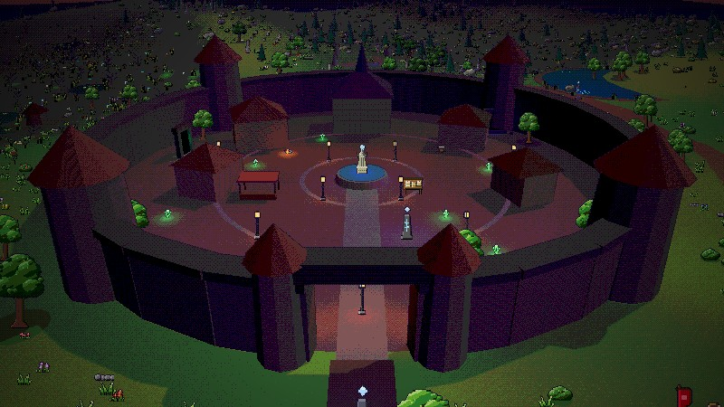
Plaza amurallada con posada, forja, mercado, capilla, establo y tablón de encargos. Zona segura: las criaturas no entran y aquí no hay JcJ.
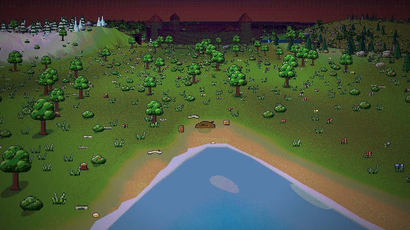
Costa con cabos, fiordos e islotes, mar con oleaje y caminos que cruzan el reino. Ocho piedras rúnicas para viajar entre lo que ya has descubierto.
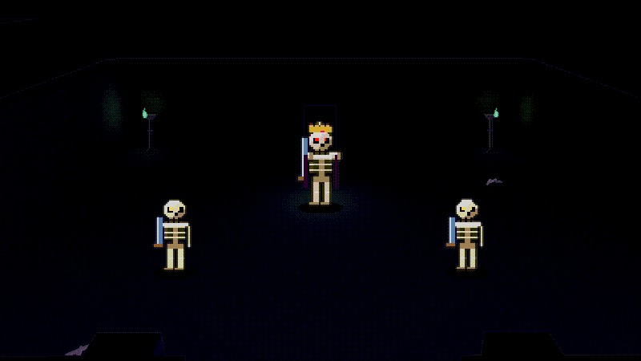
Tres criptas de luz espectral con sus jefes, y Las Profundidades: una mazmorra sin fondo bajo la Ciudadela donde cada piso es más duro que el anterior.
Combina raza y especialización: cada mezcla tiene su aspecto, su color de túnica y su forma de jugar.
Sube hasta nivel 15 repartiendo puntos en dos ramas de talentos por clase, con habilidades definitivas al final de cada rama. Al llegar al techo, la experiencia sigue contando: se convierte en Ecos, nueve mejoras permanentes que no se agotan nunca. Y puedes reasignar tu build cuando quieras.
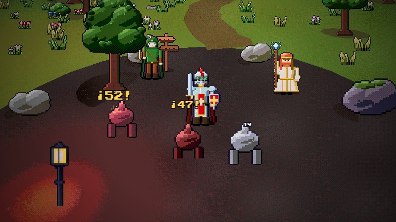
La IA de las criaturas, el daño, la armadura y hasta tu vida viven en el servidor. Crítico, daño crítico, velocidad de ataque, bloqueo y reducción de daño: el combate ya no es solo pegar.
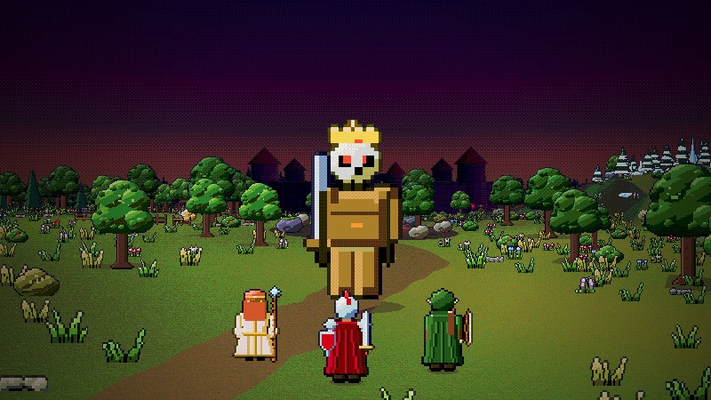
Seis jefes repartidos por las comarcas y, cada cierto tiempo, el Coloso de Valdoria despierta al sur con un anuncio a todo el reino: 3000 de vida y botín repartido entre todos los que participen.
Tres habilidades base por clase más dos definitivas por talentos. Cada clase gestiona su recurso: Furia que se acumula luchando, Vigor que se regenera rápido o Maná que hay que dosificar.
75 objetos base con 13 afijos en cuatro grados de calidad y seis poderes legendarios. Ningún objeto sale igual que otro, y Bramm puede retemplar y reforjar los afijos del que ya tienes.
Pierdes el 10% de la experiencia del nivel y arrastras Alma Debilitada 90 segundos: un 30% menos de daño, incluso si te desconectas. La Sacerdotisa Mira puede purgarla por 30 de oro.
Uníos para compartir botín y crédito de misiones, y abatir a los jefes más duros.
Funda tu clan por 500 de oro, invita miembros, ponle lema y usa el chat de gremio entre reinos.
Actívalo si quieres pelea entre jugadores. Nunca dentro de la Ciudadela, y sin perder objetos.
Intercambios cara a cara con confirmación por ambas partes y ejecución atómica en el servidor.
Vende aunque estés desconectado y recoge tus ganancias al volver, menos un 5% de comisión.
Corceles, lobos huargo y corceles espectrales, más ocho piedras rúnicas repartidas por el continente.
Pesca en el lago, cocina en las hogueras y forja equipo con los materiales que sueltan las criaturas.
Tres encargos al día para todo el reino, más los semanales: el progreso repetible cuando agotas las misiones.
Capturas tomadas con el propio motor del juego.
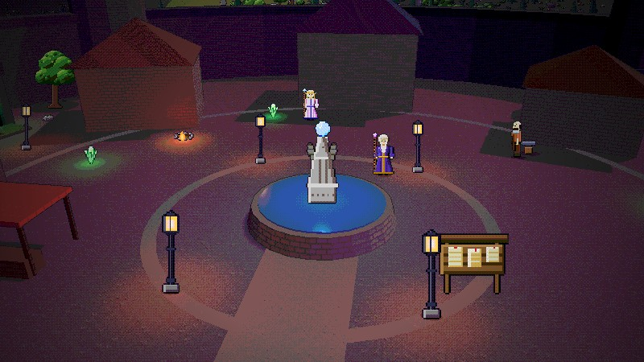
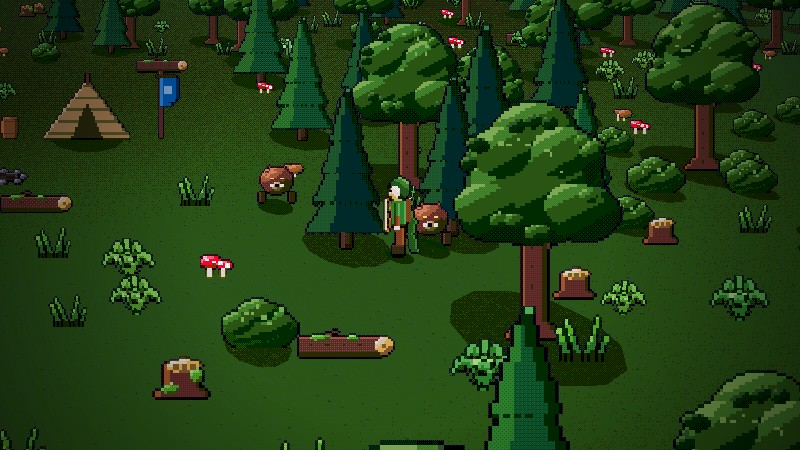
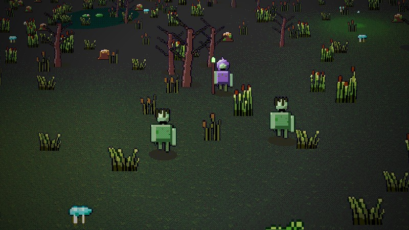
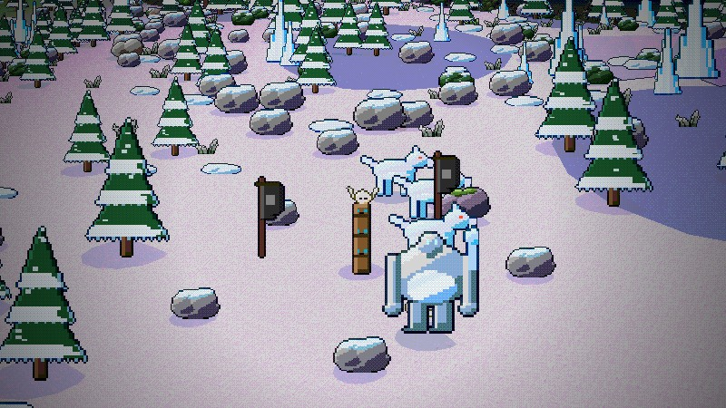
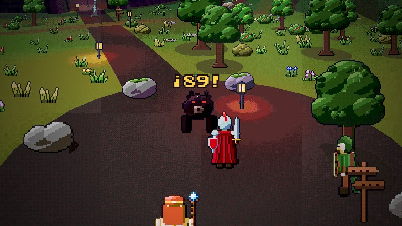
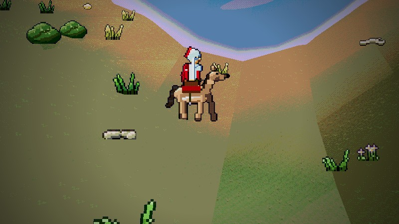
El continente se abre al mar. La próxima gran actualización lleva a Valdoria a la costa este, con un puerto, un camino nuevo y una barca que zarpa hacia las islas.
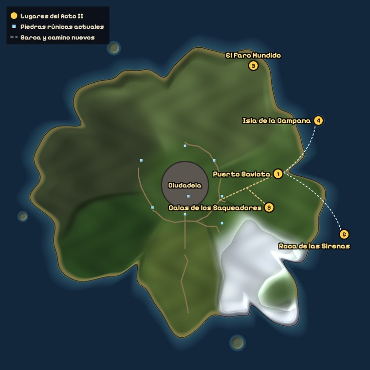
Trabajo en curso: lo que decidas ahora seguirá contando cuando llegue.
Gratis, sin instalar nada y sin descargas: crea tu cuenta y en un minuto estás en la plaza. Hasta cinco personajes por cuenta y dos reinos, Valdoria y Penumbra.
Jugar ahoraEl juego está en alpha y el servidor es gratuito. Si llevaba un rato sin nadie dentro, la primera carga puede tardar medio minuto en despertar. Se juega con ratón y teclado: no está pensado para móvil.